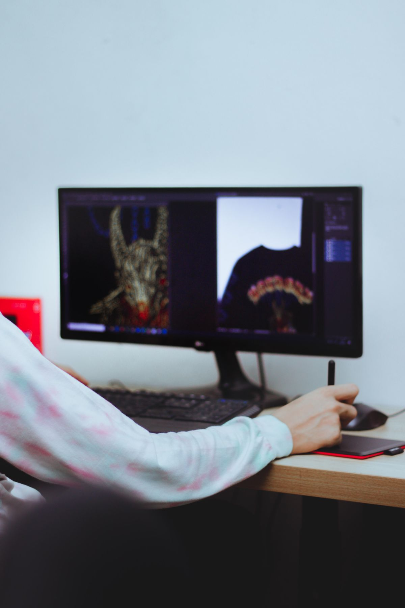
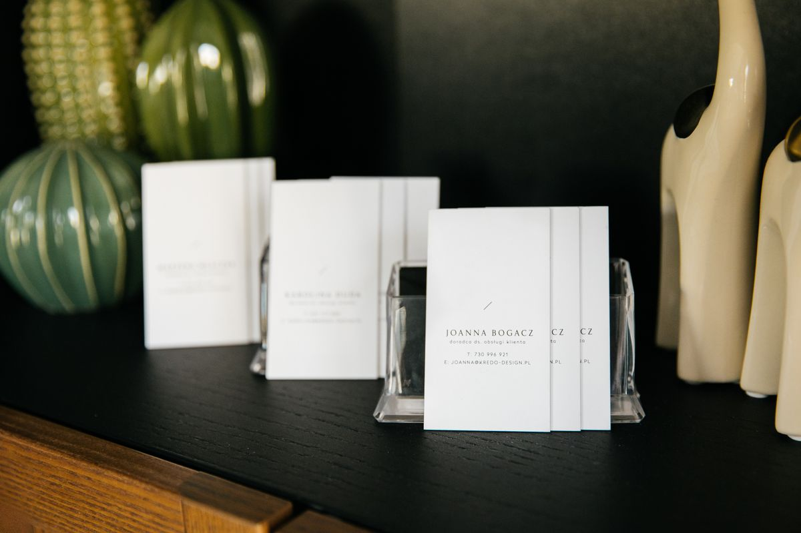

Kamu mau bikin logo, ikon, atau ilustrasi buat usaha kecilmu, tapi harga Adobe Illustrator bikin mundur duluan. Wajar. Per Oktober 2026, Illustrator paket single app dibanderol 22,99 dolar Amerika per bulan dengan kontrak tahunan, dan aksesmu berhenti begitu berhenti bayar. Kabar baiknya, ada Inkscape: editor grafis vektor gratis dan open source untuk Windows, macOS, dan Linux. Versi stabil terbarunya, 1.4.4, rilis 6 Mei 2026. Artikel ini membahas apa saja yang bisa Inkscape kerjakan, cara memulainya, dan batasannya yang jujur.
Kenapa Illustrator Terasa Mahal Buat Pemula
Masalahnya bukan kualitas Illustrator, tapi model bayarnya. Langganan bulanan 22,99 dolar terdengar kecil, tapi dalam setahun totalnya 275,88 dolar, dan itu baru satu aplikasi. Kalau kamu cuma butuh bikin logo buat toko online, ikon buat aplikasi, atau poster buat acara kampus, tagihan tahunan itu terasa berat. Belum lagi kalau kamu berhenti berlangganan, akses ke aplikasinya ikut berhenti. Buat pelajar, freelancer pemula, atau pemilik usaha kecil yang desainnya cuma sesekali, angka itu sulit dibenarkan. Di titik inilah alternatif gratis jadi masuk akal, asalkan fiturnya memang cukup buat kerjaanmu.
Apa yang Bisa Inkscape Kerjakan
Inkscape adalah editor vektor gratis dan open source untuk Windows, macOS, dan Linux. Format aslinya SVG, standar web, jadi hasil karyamu bisa langsung dipakai di website tanpa konversi aneh-aneh. Buat kerjaan sehari-hari, Inkscape sudah menutup kebutuhan utama: menggambar logo dengan pen tool dan kurva Bezier, mengedit node satu per satu sampai bentuknya pas, menata teks di sepanjang jalur melengkung buat badge atau stempel, sampai mengubah sketsa hasil pindaian jadi jalur vektor lewat fitur Trace Bitmap.
Karena berbasis vektor, hasil kerja Inkscape bisa diperbesar dari ukuran ikon kecil sampai spanduk besar tanpa pecah. Berkas SVG-nya juga bisa dibuka dan diedit lagi kapan saja, jadi revisi logo tidak harus mulai dari nol.
Inkscape juga bisa membuka berkas Illustrator yang disimpan dengan kompatibilitas PDF, dan sejak versi 1.4 ia bisa mengimpor berkas Affinity Designer. Artinya, kalau klien mengirim berkas AI, kamu tidak langsung mentok. Ekspornya fleksibel: PNG transparan buat media sosial, PDF buat cetak, dan SVG buat web. Tidak ada watermark, tidak ada batas waktu, dan tidak ada fitur yang dikunci di balik pembayaran. Semua yang diunduh dari situs resminya, inkscape.org, adalah versi lengkap.

Cara Mulai dalam Satu Sore
Kamu tidak perlu kursus buat mulai. Unduh Inkscape dari inkscape.org, pilih versi sesuai sistem operasimu, lalu instal seperti aplikasi biasa. Tidak ada akun yang wajib dibuat dan tidak ada kartu kredit yang diminta. Sesudah terbuka, coba proyek kecil dulu supaya tanganmu kenal alatnya:
- Buat dokumen baru, lalu gambar bentuk dasar dengan pen tool dan rapikan titik-titiknya dengan node tool.
- Tambahkan teks, ubah jenis huruf dan ukurannya, lalu coba letakkan teks di jalur melengkung.
- Kalau punya logo lama berbentuk gambar JPG, masukkan ke kanvas, lalu pakai Path, Trace Bitmap, untuk mengubahnya jadi vektor yang bisa diperbesar tanpa pecah.
- Simpan sebagai SVG buat arsip, lalu ekspor PNG transparan buat dipakai di media sosial atau marketplace.
Satu sore cukup buat menyelesaikan logo sederhana pertamamu. Kalau mentok, tutorial gratis Inkscape mudah dicari di internet, dan situs resminya jadi tempat mulai yang paling aman.
Batasan Jujur Inkscape dan Satu Cadangan Gratis Lain
Inkscape bukan pengganti Illustrator yang sempurna. Batas terbesarnya ada di urusan cetak profesional: Inkscape bekerja dalam RGB, model warna layar, dan belum bisa menyerahkan berkas CMYK dengan manajemen warna penuh ke percetakan yang menuntut itu. Kalau kerjaanmu berakhir di percetakan offset yang ketat soal warna, kamu tetap butuh Illustrator atau jasa cetak yang menerima RGB. Inkscape juga bukan editor foto: retouch dan hapus latar foto lebih cocok dikerjakan di editor raster seperti GIMP atau Photopea.
Kabar baiknya, sejak 30 Oktober 2025 ada cadangan gratis lain: Affinity dari Canva. Aplikasi gabungan Designer, Photo, dan Publisher ini sekarang gratis buat individu di Mac dan Windows, dengan syarat membuat akun Canva gratis. Fitur AI-nya memang cuma buat pelanggan Canva premium, tapi alat vektor intinya terbuka semua. Jadi rencananya jelas: mulai dari Inkscape yang tanpa akun dan tanpa syarat, dan kalau nanti butuh alur kerja yang lebih rapi buat cetak, coba Affinity.

Buat bikin logo, ikon, dan ilustrasi, Inkscape sudah lebih dari cukup, dan harganya nol. Kamu tidak perlu menunggu langganan atau kartu kredit buat mulai berkarya malam ini. Unduh, coba satu proyek kecil, dan rasakan sendiri apakah alurnya cocok denganmu. Kalau ternyata cocok, kamu baru saja menghemat ratusan dolar setahun tanpa kehilangan alat kerja yang penting.
← Kembali ke Other